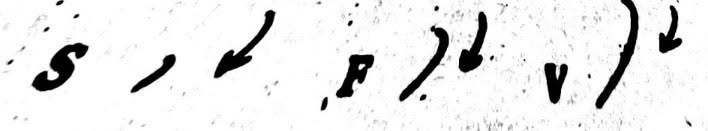

Chapter 4: Gregg Shorthand
With proper practice, Gregg Shorthand is Easy
I am lying if I say learning steno is easy. "Practice, practice, practice" that is our motto. Acquiring accuracy, speed, and endurance will be a crucial part in your journey. Now ask yourself are you ready to learn? Are you willing to give extra effort and time? I know you can, and I know you will so let's start now!
In this chapter you will learn the most frequent used alphabet or strokes, basic principles, proper joinings, different sizes and strokes, and brief forms.
With Gregg Shorthand you can reach any speed goal you set for yourself. All it takes is faithful, intelligent practice.
LESSON 2
Group A
A and E are most frequently used vowels in the English language. The shorthand A and E represents with a circle stroke. They only differ in sizes. E is a smaller circle than A.
A is a very important sound in English language. The circle can be written in either directions depending on principles or the next strokes.
These letters have the same stroke: a downward right curve; they only differ in sizes. Observe the difference in the sizes:
S & Zs can be written like longhand commas. "comma s" is what we call to the shorthand stroke that resembles the longhand comma. While there is what we call the "left s"; it is a tiny downward left curve. Beside s same stroke also represent the letter z.
FF is a downward right curve longer than S and shorter than V.
VV is the longest downward right curve. This should be longer than S and F.
In English—there are many words containing letters that are not pronounced. In Gregg Shorthand these silent letters are omitted; only the sounds that you actually hear are written. "What you hear is what you write."
In the following words check what letters would not be written because they are not pronounced.
Group B
The shorthand stroke for n is a very short forward straight line. The shorthand stroke for m is a longer forward straight line.
The shorthand stroke for t is a short upward straight line. The shorthand stroke for d is a longer upward straight line.

Capitalization is indicated by two upward dashes placed underneath the word to be capitalized (e.g., Dave, Fay, Mae).
Challenge Zone
Challenge yourselves by transcribing this picture below
Transcribe the following into shorthand:
1. A & B _______________
2. S, F, V _______________
3. N, M _______________
4. T, D _______________